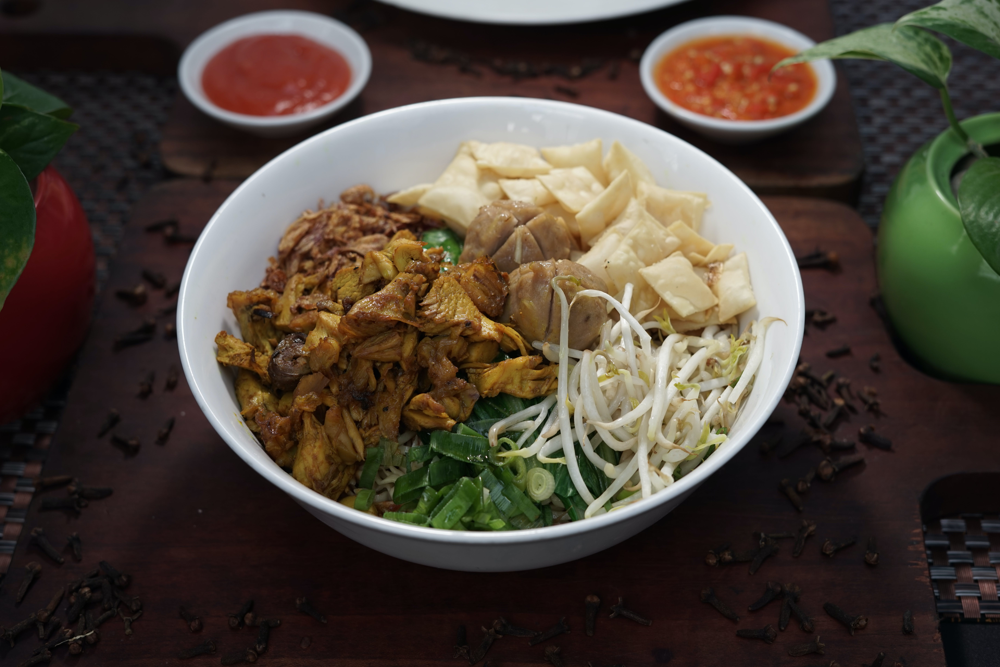

Mi Ayam

üçú Chicken Noodle (Mi Ayam)
Ingredients :
- 200 grams egg noodles
- 150 grams chicken breast, thinly sliced
- 2 cloves garlic, minced
- 1 tablespoon soy sauce
- 1 tablespoon oyster sauce
- 1 tablespoon sweet soy sauce (kecap manis)
- 1 teaspoon sesame oil
- 1/2 teaspoon white pepper
- 1 carrot, julienned
- 1 cup cabbage, shredded
- 2 green onions, sliced
- Fried shallots for garnish
- Sliced red chilies for garnish (optional)
- Lime wedges for serving
- Boiling water for blanching noodles
üçú Chicken Noodle (Mi Ayam) Instructions :
- Boil water in a pot and cook the egg noodles according to the package instructions. Drain and set aside.
- In a separate pot, blanch the sliced chicken in boiling water until fully cooked. Drain and set aside.
- Heat a bit of oil in a pan, sauté minced garlic until fragrant.
- Add the cooked chicken, soy sauce, oyster sauce, sweet soy sauce, sesame oil, and white pepper. Stir-fry for
a few minutes until well combined.
- Add julienned carrots and shredded cabbage to the chicken mixture. Stir-fry until the vegetables are tender
yet still crisp.
- Toss in the cooked egg noodles and sliced green onions. Mix well until the noodles are coated with the sauce
and ingredients.
- Adjust the seasoning if needed. Remove from heat.
- Serve the chicken noodles hot, garnished with fried shallots and sliced red chilies if desired. Provide lime
wedges on the side for extra flavor.
- Enjoy your flavorful Chicken Noodle (Mi Ayam)!